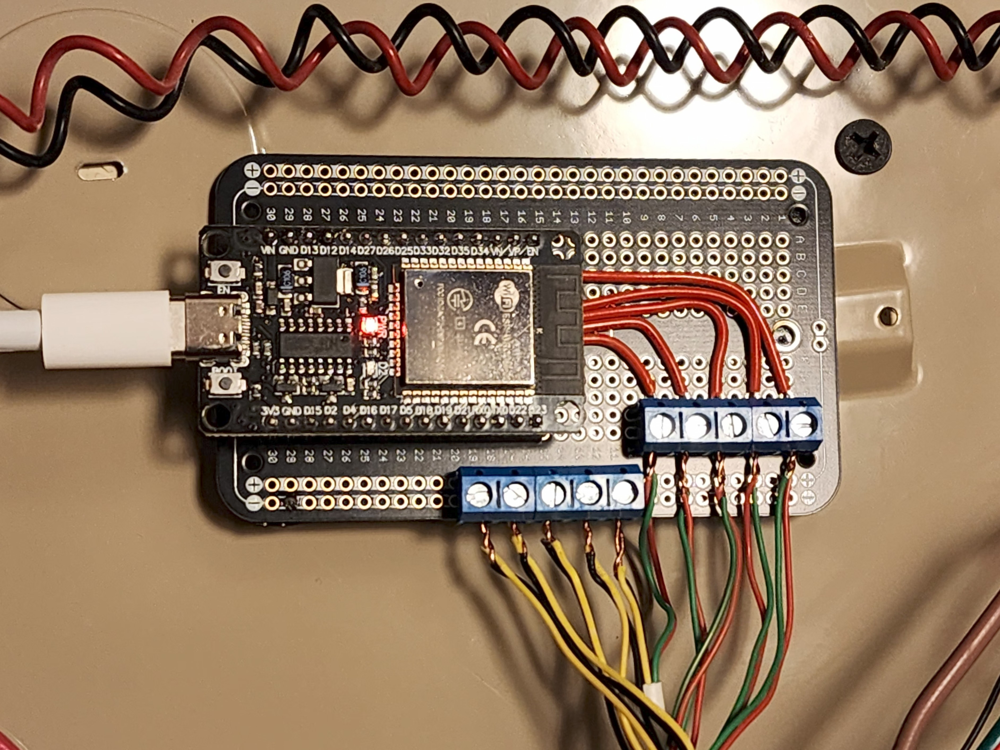

Many homes come with preinstalled security systems, some of which require a subscription just to use the system altogether. These preinstalled systems use basic sensors to determine if doors and windows are in an open or closed state, and these can be easily repurposed with an esp32 based device and a smart home platform such as Home Assistant.
Most of these sensors are closed-contact sensors, meaning they send a signal when the contacts are closed, and can easily be hooked up to pins and turned into entities for Home Assistant where we can build automatons to send notifications if the state of the doors change when everyone has left the house and set automatic arming and disarming based on phone location data. Combining this data with other sensors, we can get a more A descriptive picture of what is going on around or in your home when you're not there, and best of all, without a subscription.